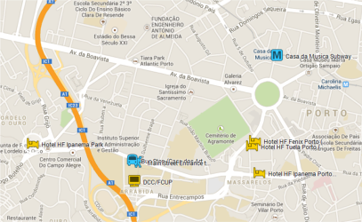
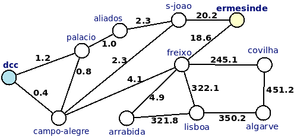
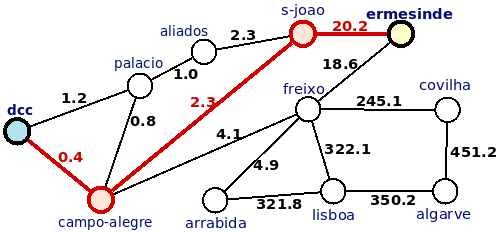

Para efeitos da nota atribuida à resolução de exercícios ao longo do semestre - Submeter até 23:59 de 20 de Dezembro
(o problema continuará depois disponível para submissão, mas sem contar para a nota)
Aniceto é um caloiro que estuda no Departamento de Ciência de Computadores da FCUP. O seu grande problema é que a maior parte das aulas foram marcadas para muito cedo, e como ele não conhece muito sobre a cidade do Porto, por vezes perde-se e não chega a horas...
Estudioso como é, arranjou um mapa das estradas, e resolveu que ia fazer um programa para o ajudar, procurando que este lhe desse o caminho mínimo entre a sua casa e o DCC. O problema é que ele não está a ver que tipo de algoritmo pode usar! Claro que se lembrou da UC de Desenho e Análise de Algoritmos e veio falar contigo. Prontamente, disseste-lhe que isso era um problema de grafos, e que não terias problemas em ajudá-lo. O Aniceto deu-te então o mapa e a tua tarefa é descobrir qual o caminho mínimo da sua casa até ao Departamento.
Obviamente que na tua infinita generosidade, decidiste fazer um programa mais geral, que ajudasse todos os alunos que chegam atrasados às aulas...
Dado um mapa de de estradas, a localização duma casa e a localização das aulas teóricas, a tua tarefa é escrever um programa indicando qual a distância mínima a percorrer desde a casa até às aulas.
A primeira linha contém dois números: N , o número de pontos ou sítios diferentes no mapa e E, o número de estradas.
De seguida vem uma linha indicando primeiro o sítio onde fica a casa do Aniceto, seguido do local das aulas (o seu destino, portanto).
Seguem-se de E linhas, indicando quais os pontos que a estrada liga, e o comprimento (em Km) da estrada que os liga, no formato ponto_1 ponto_2 comprimento_estrada. O comprimento da estrada não ultrapassa os 1000 Km e não é necessariamente um número inteiro. Podes assumir que as estradas têm sempre dois sentidos (isto é, quando existe estrada de A para B, automaticamente também existe uma de B para A, com a mesma distancia).
Cada ponto é representado por uma palavra contendo apenas letras mínusculas ou hifens (-), tendo no máximo 30 caracteres.
Deve ser imprimida uma única linha, contendo a distância mínima a percorrer para ir da casa do Aniceto até ao local das aulas (a distância deve vir arredondada a uma casa decimal).
Podes assumir que existe sempre pelo menos um caminho entre a casa do Aniceto e o seu destino.
São garantidos os seguintes limites em todos os casos de teste que irão ser colocados ao programa:
| 2 ≤ N ≤ 1000 | Número de nós | |
| 1 ≤ E ≤ 5000 | Número de arestas (ligações) |
11 15 ermesinde dcc ermesinde s-joao 20.2 ermesinde freixo 18.6 s-joao aliados 2.3 aliados palacio 1.0 palacio dcc 1.2 freixo campo-alegre 4.1 campo-alegre dcc 0.4 campo-alegre palacio 0.8 s-joao campo-alegre 2.3 freixo lisboa 322.1 freixo arrabida 4.9 arrabida lisboa 321.8 lisboa algarve 350.2 algarve covilha 451.2 covilha freixo 245.1
22.9
O exemplo de input corresponde ao seguinte grafo:

O caminho mais curto entre "ermesinde" e "dcc" tem distância 22.9 (20.2+2.3+0.4) está indicado a vermelho na figura seguinte:

Desenho e Análise de Algoritmos (CC2001)
DCC/FCUP - Faculdade de Ciências da Universidade do Porto